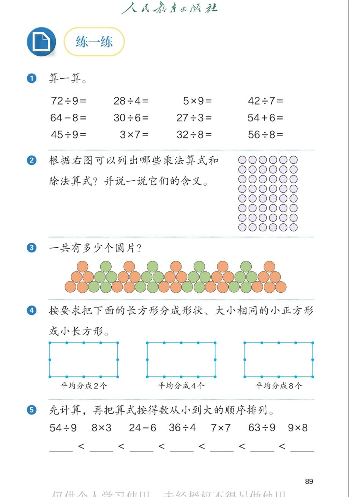

🔊 五、7~9 的表内乘、除法 · 课本第 89 页 · 练一练 1~5
人教版《数学》二年级上册 · 有声图文带读 · 先想后看解析 · 口诀求商 · 一图三式 · 排序比较
题数
6
认知
2
强化
3
拓展
1
本页重点
口诀求商 · 圆点阵列一图三式 · 算得数排大小
🎧 分两步学：
① 解析教材图片
——纯声音读图，读到哪一块哪一块闪动提示；关键处先倒计时让你思考，再在图片下方给出解析并朗读。
② 分层提问练习
——六道分层题（认知 / 强化 / 拓展），先思考再展开解析、朗读参考答案；这一步不再回到图片。
也可以随时点任意一句话、图上任意一块单独听；点课本文字卡还会展开答案。
教材图片（点块听读，读到哪块哪块闪）

📖 人教版《数学》二年级上册 · 课本第 89 页 · 图片仅供个人学习，版权归人民教育出版社所有
🤔 想一想（点我可跳过）
课本的文字（点句子：听读 + 看答案）
第1题
十二道口算怎么算得又对又快？
看答案 ▾
72÷9=
8
（八九七十二）；28÷4=
7
（四七二十八）；
5×9=
45
；42÷7=
6
（六七四十二）；
64-8=
56
；30÷6=
5
（五六三十）；
27÷3=
9
（三九二十七）；54+6=
60
；
45÷9=
5
（五九四十五）；3×7=
21
；
32÷8=
4
（四八三十二）；56÷8=
7
（七八五十六）。
一图三式
一个圆点阵能列出哪些算式？
看答案 ▾
乘法：
6×8=48
（8 个 6 是 48）；
除法：
48÷6=8
（48 里面有 8 个 6）；
除法：
48÷8=6
（把 48 平均分成 8 份，每份 6）；
💡 乘除法是一家人，用同一句八六四十八。
分图形
长方形平均分成 2 个、4 个、8 个怎么分？
看答案 ▾
分 2 个：左右（或上下）
对半
分；
分 4 个：先分 2 个，每个
再对半
；
分 8 个：先分 4 个，每个
再对半
；
💡 平均分一次，个数就翻一倍：2→4→8。
排序诀窍
把算式按得数从小到大排列，怎么做？
看答案 ▾
先算：
54÷9=6
、8×3=24、24-6=18、36÷4=9、
7×7=49、63÷9=7、9×8=72；
再排：6、7、9、18、24、49、72；
💡 别忘了横线上抄的是
算式
哦。
分层提问练习（先想后看解析）
➗
认知
72÷9 等于几？想哪句口诀？
看解析
🤔 想一想
解析：
口诀：八九七十二；
72÷9=
8
。
🔵
认知
圆点阵每行 6 个、共 8 行，一共有多少个圆点？
看解析
🤔 想一想
解析：
求 8 个 6 是多少，用乘法；
6×8=
48
（个）。
🧮
强化
根据圆点阵列能列出哪三道算式？含义是什么？
看解析
🤔 想一想
解析：
6×8=48
：8 个 6 合起来是 48；
48÷6=8
：48 里面有 8 个 6；
48÷8=6
：48 平均分成 8 份，每份 6。
💡 一图三式，乘除互逆
🟠
强化
第 3 题的圆片每 5 个一组、共 9 组，一共有多少个？
看解析
🤔 想一想
解析：
求 9 个 5 是多少，用乘法；
5×9=
45
（个）。
💡 数的时候按组数，不容易乱
📏
强化
第 5 题七道算式按得数从小到大怎么排？
看解析
🤔 想一想
解析：
得数：6、7、9、18、24、49、72；
54÷9＜63÷9＜36÷4＜24-6＜8×3＜7×7＜9×8。
💡 排的是算式，得数只是排队依据
✂️
拓展
为什么先分成 2 个、再分成 4 个、最后能分成 8 个？藏着什么规律？
看解析
🤔 想一想
解析：
平均分一次，块数
翻一倍
：2→4→8；
2→4 是乘 2，4→8 也是乘 2；
✂️ 对半再对半，2×2×2=8
① 解析教材图片
② 分层提问练习
⏹ 停止
纯声音 + 高亮跟随 · 想好才出解析
← 返回导航